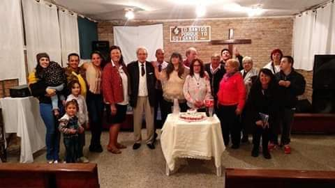
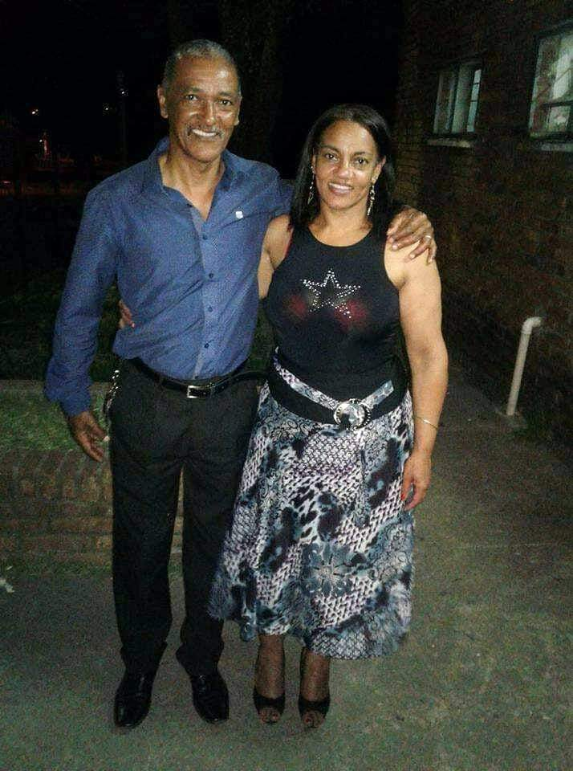
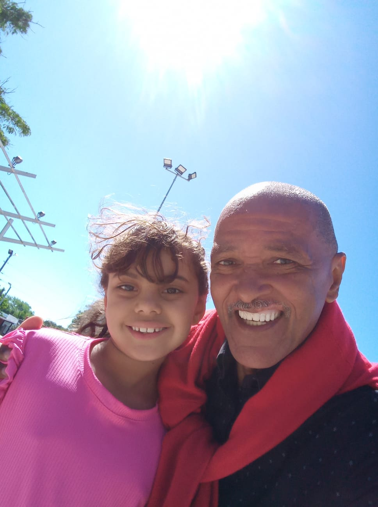

Familia & comunidad
Mario Pereyra, el renombrado cantautor contemporáneo, desde joven mostró una conexión profunda con su fe y una dedicación inquebrantable a difundir el mensaje espiritual a través de su música, brindando inspiración y consuelo a su comunidad con cada acorde y cada palabra entonada con pasión y devoción. Su música no solo es una expresión artística, sino también un faro de esperanza que ilumina los corazones, creando un lazo espiritual que une a las personas en amor y fe.
Su trayectoria como pastor evangelista es tan impactante como su carrera en la música. Su devoción a los principios cristianos ha sido un faro que ha guiado tanto su vida personal como su camino en el ministerio. Desde los primeros días de su conversión, llevó consigo una pasión por compartir la palabra de Dios de manera única y accesible para todos.
En sus prédicas, Mario Pereyra no solo compartía las enseñanzas bíblicas, sino que también las entrelazaba con su experiencia personal y la realidad contemporánea. Su enfoque resonante y auténtico logró tocar las fibras más profundas de aquellos que buscaban respuestas espirituales en un mundo cada vez más complejo.
La música, para Pereyra, se convirtió en un medio para transmitir mensajes espirituales de esperanza, amor y redención. Cada composición se volvió una expresión de su fe, una plegaria en forma de canción que invitaba a la reflexión y al encuentro con lo divino. Su habilidad para fusionar la musicalidad con la espiritualidad creó un puente entre dos mundos aparentemente dispares, conectando con audiencias de diversas creencias y experiencias de vida.
El compromiso de Mario Pereyra con su fe fue más allá de las palabras y las melodías. Participó activamente en obras benéficas y proyectos sociales, utilizando su influencia para impactar positivamente en comunidades necesitadas. Su visión de la fe como un motor para la acción inspiró a muchos a seguir su ejemplo y trabajar por el bienestar de quienes menos tienen.
Casado con María Lina Ferreira, oriunda del departamento de Tacuarembó, han construido juntos una vida llena de amor y valores. Sus tres hijos, Guillermo Eliseo, Deborah Yanet y Marcos Esteban, son testimonio de la dedicación y orientación que Mario brinda como padre.
La familia Pereyra no solo es un reflejo de amor y unidad, sino también un faro de esperanza para la comunidad. Sus nietos, Tihago Benjamín, Génesis Melec y Delfina, han heredado la fortaleza espiritual y los valores inquebrantables que Mario ha cultivado a lo largo de los años. Cada miembro de la familia es una piedra angular en la estructura que Mario ha construido con amor, fe y compromiso.
Mario Pereyra, con su bondad y dedicación, no solo impactó a su familia sino también a la comunidad. Su presencia constante en eventos locales y su participación en actividades de caridad consolidaron su papel como un líder espiritual y comunitario. Su mensaje de amor, paz y esperanza resonó más allá de los límites de su congregación, tocando los corazones de aquellos que buscaban guía espiritual y apoyo en tiempos difíciles.
El legado de Mario Pereyra trasciende las notas de sus canciones y las palabras de sus prédicas.
Su contribución a la música cristiana contemporánea y su impacto positivo en la comunidad marcan un capítulo significativo en la historia espiritual de la región. Que su luz continúe brillando y guiándonos a todos hacia un camino de amor, fe y servicio desinteresado.